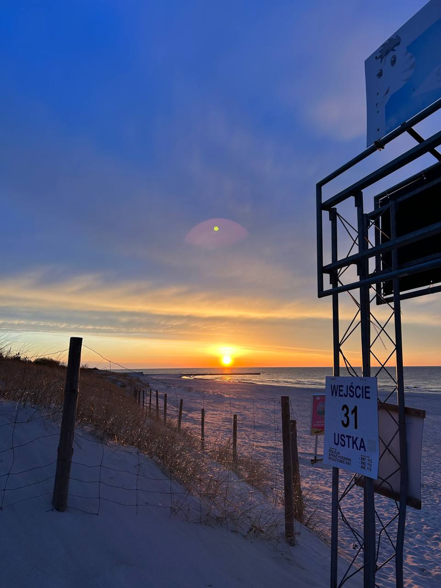
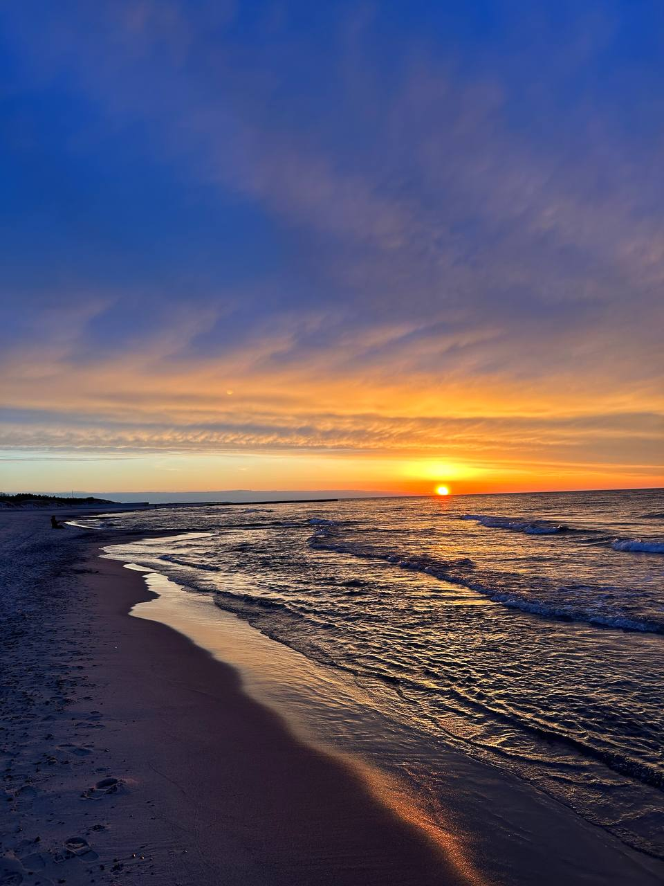

Kolejne spotkanie Rady Pracodawców w Instytut Nauk Ścisłych i Technicznych za nami! ⭐
Rozmawialiśmy o czymś dużym — Centrum Nowoczesnych Technologii. 🚀 Jest to działanie długoterminowe, ale nie możemy wyjawiać za wiele.
Trzymamy kciuki, żeby nadszedł moment, gdzie mówić o nim będą wszyscy. 🤞

